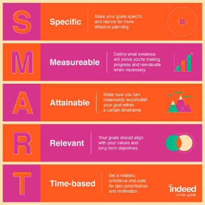

Sinéad explains how to set SMART goals, the key to not just dreaming but accomplishing what you set your mind to.
Goal setting is a helpful way to build the career you want.
By setting objectives and creating a clear roadmap for how you’ll reach your intended target,
you can decide how to apply your time and resources to make the most progress.
Without goals, it can be difficult to determine how to work toward a certain job, promotion or another milestone.
When you set an objective for yourself, you should include each step necessary for success.
In this article, we outline a framework called SMART goals along with a few tips and examples to assist you in your goal-setting efforts.

What are SMART goals?
SMART is an acronym that stands for specific, measurable, achievable, relevant and time-based.
Each element of the SMART framework works together to create a goal that is carefully planned, clear and trackable.
You may have set goals in the past that were difficult to achieve because they were too vague, aggressive or poorly framed.
Working toward a poorly crafted goal can feel daunting and unachievable.
Creating SMART goals can help solve these problems.
Whether you’re setting personal or professional goals, using the SMART goal framework can establish a strong foundation for achieving success.
Below, we’ll demonstrate how to turn a goal like “I want to be in leadership” into a SMART goal.
The words in bold describe your goals.
S = SPECIFIC
Be as clear and specific as possible with what you want to achieve.
The more narrow your goal, the more you’ll understand the steps necessary to achieve it.
Example “I want to earn a position managing a development team for a startup tech company.
M = MEASURABLE
Sinéad explains how to craft measurable goals and gives examples of how you can define
your goals to help you to level up in your career and in life.
What evidence will prove you’re making progress toward your goal?
For example, if your goal is to earn a position managing a development team for a startup tech company,
you might measure progress by the number of management positions you’ve applied for or interviews you’ve completed.
Setting milestones along the way will give you an opportunity to re-evaluate and course-correct as needed.
When you achieve your milestones, remember to reward yourself in small but meaningful ways.
Example: “I will apply to three open positions for the manager of a development team at a tech startup.”
A = ACHIEVABLE
Have you set an achievable goal?
Setting goals you can reasonably accomplish within a certain timeframe will help keep you motivated and focused.
Using the above example of earning a job managing a development team, you should know the credentials,
experience and skills necessary to earn that position. Before you begin working toward a goal,
decide whether it’s something you can achieve now or whether there are additional preliminary steps you should take to become better prepared.
Example: “I will update my resume with relevant qualifications, so I can apply to three open positions for the manager of a development team at a tech startup.”
R= RELEVANT
When setting goals for yourself, consider whether they are relevant.
Each of your goals should align with your values and larger, long-term goals.
If a goal doesn’t contribute toward your broader objectives, you might rethink it.
Ask yourself why the goal is important to you,
how achieving it will help you and how it will contribute toward your long-term goals.
Example: “To achieve my goal of being in leadership,
I will update my resume with relevant qualifications so I can apply to three open
positions for the manager of a development team at a tech startup.”
T = TIME-BASED
What is your goal time frame? An end-date can help provide motivation and help you prioritize.
For example, if your goal is to earn a promotion to a more senior position, you might give yourself six months.
If you haven’t achieved your goal by then, take time to consider why.
Your timeframe might have been unrealistic,
you might have run into unexpected roadblocks or your goal might have been unachievable.
Example: “To achieve my goal of being in leadership, I will update my resume with relevant
qualifications so I can apply to three open positions for the manager of a development team at a tech startup this week.”
ADVANTAGES
SMART goals present various advantages. For starters, they're not vague. Whereas most goals people make aren't very descriptive, SMART goals are specific, which ultimately helps increase their odds of being achieved. Also, SMART goals incorporate your plans. This helps you achieve your goal since you'll already know the next steps to take. Since SMART goals require some form of measurement, they also provide you with the opportunity to track your progress. If you miss a small deadline within your overall goal deadline, you'll not only know, but you'll also have time to get back on track.
Disadvantages
Though SMART goals are very advantageous, they also pose some disadvantages. For example, because your goal will be well-planned out, it could lead you to become obsessed with completing your goal by a certain deadline. Also, it could make you crave more achievements in the future and could potentially set you up for a continuous cycle of wanting to achieve goal after goal. For some, SMART goal making could be overly ambitious.